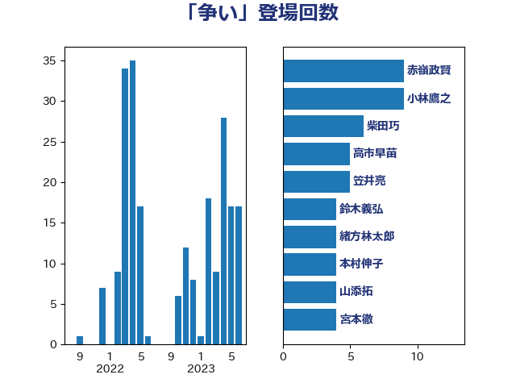

単語「争い」

| 吉良州司 | 無所属 | 11 回 |
| 小林鷹之 | 自由民主党 | 9 回 |
| 柴田巧 | 日本維新の会 | 6 回 |
| 階猛 | 立憲民主党 | 6 回 |
| 串田誠一 | 日本維新の会 | 5 回 |
| 井上信治 | 自由民主党 | 5 回 |
| 山添拓 | 日本共産党 | 5 回 |
| 笠井亮 | 日本共産党 | 5 回 |
| 篠原豪 | 立憲民主党 | 5 回 |
| 茂木敏充 | 自由民主党 | 4 回 |
| 前川清成 | 日本維新の会 | 3 回 |
| 川田龍平 | 立憲民主党 | 3 回 |
| 本村伸子 | 日本共産党 | 3 回 |
| 萩生田光一 | 自由民主党 | 3 回 |
| 赤嶺政賢 | 日本共産党 | 3 回 |
| 三木亨 | 自由民主党 | 2 回 |
| 古川禎久 | 自由民主党 | 2 回 |
| 塩村あやか | 立憲民主党 | 2 回 |
| 太田房江 | 自由民主党 | 2 回 |
| 宮崎政久 | 自由民主党 | 2 回 |
| 櫻井周 | 立憲民主党 | 2 回 |
| 清水貴之 | 日本維新の会 | 2 回 |
| 緒方林太郎 | 無所属 | 2 回 |
| 菅義偉 | 自由民主党 | 2 回 |
| 足立康史 | 日本維新の会 | 2 回 |
| 近藤和也 | 立憲民主党 | 2 回 |
| 鈴木俊一 | 自由民主党 | 2 回 |
| 鈴木義弘 | 国民民主党 | 2 回 |
| 中山展宏 | 自由民主党 | 1 回 |
| 中西健治 | 自由民主党 | 1 回 |
| 井上哲士 | 日本共産党 | 1 回 |
| 井林辰憲 | 自由民主党 | 1 回 |
| 今村雅弘 | 自由民主党 | 1 回 |
| 伊佐進一 | 公明党 | 1 回 |
| 伊藤孝江 | 公明党 | 1 回 |
| 北神圭朗 | 無所属 | 1 回 |
| 古賀之士 | 立憲民主党 | 1 回 |
| 吉田統彦 | 立憲民主党 | 1 回 |
| 嘉田由紀子 | 無所属 | 1 回 |
| 坂本哲志 | 自由民主党 | 1 回 |
| 大口善徳 | 公明党 | 1 回 |
| 大島敦 | 立憲民主党 | 1 回 |
| 安江伸夫 | 公明党 | 1 回 |
| 宮本岳志 | 日本共産党 | 1 回 |
| 小山展弘 | 立憲民主党 | 1 回 |
| 小西洋之 | 立憲民主党 | 1 回 |
| 尾身朝子 | 自由民主党 | 1 回 |
| 山田勝彦 | 立憲民主党 | 1 回 |
| 山田宏 | 自由民主党 | 1 回 |
| 山谷えり子 | 自由民主党 | 1 回 |
| 山際大志郎 | 自由民主党 | 1 回 |
| 岩渕友 | 日本共産党 | 1 回 |
| 岸真紀子 | 立憲民主党 | 1 回 |
| 平山佐知子 | 無所属 | 1 回 |
| 平沼正二郎 | 自由民主党 | 1 回 |
| 後藤茂之 | 自由民主党 | 1 回 |
| 打越さく良 | 立憲民主党 | 1 回 |
| 松島みどり | 自由民主党 | 1 回 |
| 松川るい | 自由民主党 | 1 回 |
| 森山浩行 | 立憲民主党 | 1 回 |
| 江島潔 | 自由民主党 | 1 回 |
| 河野義博 | 公明党 | 1 回 |
| 泉田裕彦 | 自由民主党 | 1 回 |
| 浅野哲 | 国民民主党 | 1 回 |
| 浜口誠 | 国民民主党 | 1 回 |
| 浜田聡 | NHK党 | 1 回 |
| 深澤陽一 | 自由民主党 | 1 回 |
| 清水真人 | 自由民主党 | 1 回 |
| 田島麻衣子 | 立憲民主党 | 1 回 |
| 田村智子 | 日本共産党 | 1 回 |
| 福島みずほ | 社会民主党 | 1 回 |
| 福田昭夫 | 立憲民主党 | 1 回 |
| 緑川貴士 | 立憲民主党 | 1 回 |
| 芳賀道也 | 国民民主党 | 1 回 |
| 藤原崇 | 自由民主党 | 1 回 |
| 鈴木貴子 | 自由民主党 | 1 回 |
| 阿達雅志 | 自由民主党 | 1 回 |
| 阿部司 | 日本維新の会 | 1 回 |
| 音喜多駿 | 日本維新の会 | 1 回 |
| 高良鉄美 | 無所属 | 1 回 |